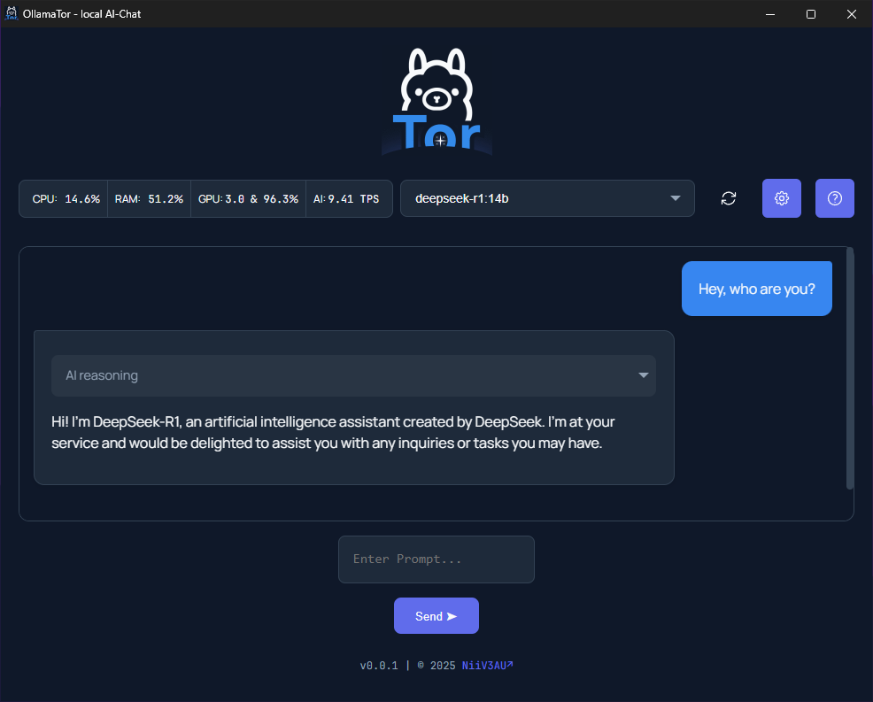

Local AI chat that respects your privacy.
OllamaTor was an open-source interface for Ollama, allowing you to chat with large language models (LLMs) directly on your computer. The project is now archived and preserved for historical reference.

Modern Alternatives
The local AI ecosystem has advanced dramatically. I strongly recommend migrating to these mature, actively maintained solutions:
LM Studio & Bionic*
Desktop app with model discovery, GPU offloading, and Bionic for local agentic workflows.
Visit lmstudio.ai →Jan
Local-first, open-source ChatGPT alternative. Runs offline with built-in inference or connects to an existing Ollama server.
Visit jan.ai →Ollama
Local model runner with an official desktop app, CLI, and HTTP API for daily chat, scripts, or pairing with Web UIs like Open WebUI.
Visit ollama.com →llama.cpp
Foundational C/C++ inference engine developed by Georgi Gerganov, powering most of the local consumer AI ecosystem.
Visit llama.app →Features (Historical Overview)
Privacy
Your data stays local. No cloud, no tracking.
Performance
Leverage the full power of your computer for fast responses.
Customization
Choose from different models and adjust settings.
Offline Availability
Works even without an internet connection.
Open Source
The code is available on GitHub and can be reviewed by anyone.
User-Friendly
Easy installation and intuitive interface.
Project Archive
innerHTML using
marked.js without DOM sanitization (such as DOMPurify),
model completions containing unescaped HTML,
<style> rules, or script payloads could manipulate
or break the application UI. Active development has ceased in favor of
hardened, mature alternatives. Legacy releases remain available for
historical interest only.
Historical System Requirements: Windows 10/11 (64-bit), Ollama & Chrome/Edge installed.
Contact
Do you have questions, feedback, or want to contribute to the development?
Visit the GitHub Repository or send an email to nv3.gigahertz994@silomails.com.